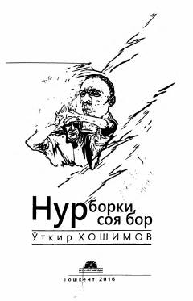

NBHayotning nur va soyasi haqida Utqir Hoshimovning ta'sirchan romani.
Utqir Hoshimovning 'Nur borki, soya bor' romani o'zbek jamiyatidagi illatlar, insoniy qadriyatlar, sevgi va xiyonat mavzularini qamrab oladi. Asarda kasalxonaga tushib qolgan yozuvchi Sherzodning hayoti va kechinmalari orqali 'nur' va 'soya' o'rtasidagi azaliy kurash tasvirlanadi. Roman o'zbek milliy ruhiyati va insoniy muammolarni o'ziga xos badiiy uslubda ifodalaydi.